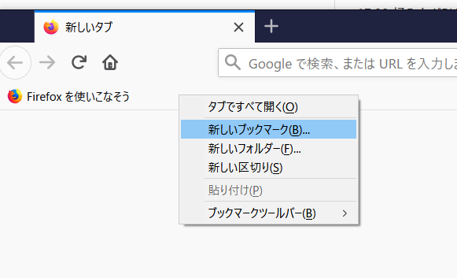
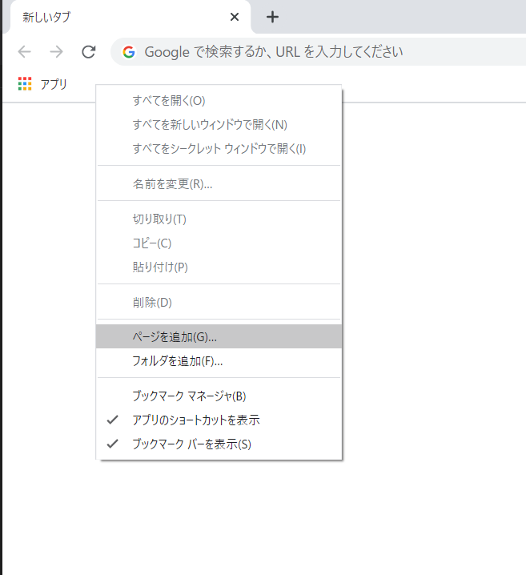
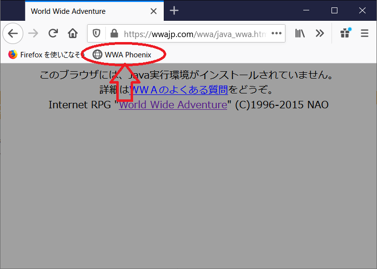

WWA Phoenixは、2019年4月30日をもちまして更新を終了させて頂きました。なお、引き続きご利用になれます。
このページの内容は、原則PCからの利用を前提としています。iOS(iPhone, iPod Touch), iPadOSデバイスは非対応です。 Androidのスマートフォン・タブレットなどでブラウザ利用は 直接コードを貼り付けて起動する場合 を御覧ください。
javascript疑似スキーム(javascript:から始まるアドレスみたいなやつ)からのJavaScript実行を認めていないブラウザ(Safariなど)ではご利用になれません。
WWA Phoenixは、Java版WWAをWWA Wingに置き換えるブックマークレットです。テキストボックス内の文字列をブックマークのURL欄に打ち込み、ブックマークに追加してください。Java版WWAが設置されているページでブックマークを選択するとWWAが起動します。
ブックマークが使えない場合には、Java版WWAのあるページに移動し、直接URLバーにテキストボックスの内容をを入力してください。その場合は、冒頭の「javascript:」が消えてしまうことがあるので、消えてしまった場合は追加してください。
詳しい動かし方は「基本的な使い方」で解説しています。
作成ツール3.02c以下のマップデータを読み込んだ時に「プレイヤー追尾」「逃げる」の挙動は当時のJava版の挙動と同じになります。
効果音は、WWAデフォルトのものに置換されてしまいます。au形式の音が再生できないための問題です。申し訳ございません。
Webkit/Blink系ブラウザ(Chrome, Safari, Opera)では、一部のGIF画像の描画に失敗するようです（ブラウザの仕様と思われます）。失敗した場合はFirefoxなどを利用してください。
WWA Wing v3.1.8より後に追加された機能は対応しておりません。Quick Saveは1つのみですし、ブラウザを閉じるとその内容は消えてしまいます。予めご了承ください。
あなたのブラウザを、Java版のWWAで使用されている画像のページまでご案内します。移動先のページから右クリックなどで画像ファイルをローカルに保存することができます。使い方はPhoenixと同じです。
WWAで使用されている画像がすべて表示されてしまうので、ネタバレ等には十分お気をつけください。
下記はPCのブラウザの利用を前提としています。スマートフォン・タブレットをご利用の場合は、動作しない可能性があります。
お使いのブラウザで、新規のブックマーク（お気に入り）を追加します。最近のPCのブラウザでは、ブックマークバーはウィンドウ上部のURLや検索を入力する欄の下にあることが多いです。
ブックマークバーを右クリックして「新しいブックマーク」を選択します。
ブックマークバーが表示されていない場合は、Windows, Linuxの場合はキーボードの「Ctrl + Shift + B」同時押し、Macの場合は「Command + Shift + B」同時押しで表示できます。
ブックマークバーを右クリックして「ページを追加」を選択します。
このページのテキストボックスの内容をコピーし、「URL」の欄に貼り付けてください。
ブックマークの名前は、わかりやすいものにしておきましょう。画像では「WWA Phoenix」としています。
例: キャラバンサークルに設置されている、従来のJava版で起動できるゲートワールド
下図はFirefoxの例ですが、Chromeでもほぼ同様です。
URLゲートを有効にしますか？: 通常は「OK」を選んでください。BGMがあるWWAなどでまともに遊べない場合は、「キャンセル」を押してください。
アイテムエフェクトを有効にしますか？: わからなければ「OK」を選んでください。「キャンセル」を押すことでアイテム取得時のアイテムボックス格納時のアニメーションがない、昔の挙動に合わせることもできます。
Enjoy!
あまりおすすめの方法ではないですが、ご参考までに紹介します。AndroidのChromeなどをご利用の場合はこちらの方法になるかと思います。
"WWA Wing" ©2013-2021 WWA Wing Team